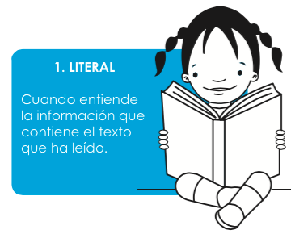

Nivel literal
Cuando haces una comprensión literal del texto que lees estás reconstruyéndolo, es decir, recordando lo que se dice en él.
Lectura crítica
Lectura literal
Lee el siguiente texto y resuelve las siguientes preguntas:
“El niño del abrigo rojo”
Aquella mañana fría de junio, Tomás salió de casa envuelto en su abrigo rojo. Caminó con paso apurado hacia la escuela, esquivando los charcos que la lluvia había dejado la noche anterior. A medio camino, encontró un gatito temblando bajo una banca. Sin dudarlo, se quitó el abrigo y envolvió al animalito, cargándolo con cuidado hasta llegar a la entrada del colegio. Allí, la profesora lo recibió sorprendida por su gesto. Tomás solo sonrió, con los brazos cruzados, tiritando de frío, pero con el corazón contento.
Pregunta de Elección Múltiple
Obra publicada con Licencia Creative Commons Reconocimiento Compartir igual 4.0